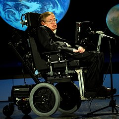

Auf der Website »WCAG 2.1 erklärt« werden Sie Videos zu jeder Richtlinie aus den Web Content Accessibility Guidelines (WCAG) 2.1 finden. Zur Zeit sind folgende Videos verfügbar:
- WCAG 2.1 Einleitung
- WCAG 2.1 Richtlinie 1.1: Textalternativen
- WCAG 2.1 Richtlinie 1.2: Zeitbasierte Medien
- WCAG 2.1 Richtlinie 1.3: Anpassbar
Diese Videos sind unter der Lizenz Creative Commons — Namensnennung 4.0 International — CC BY 4.0 verfügbar.
Hinweis: Die Hochschule der Medien bietet im Rahmen des Weiterbildungskurses »Digital Innovation« ein Modul Grundlagen der digitalen Barrierefreiheit an.
